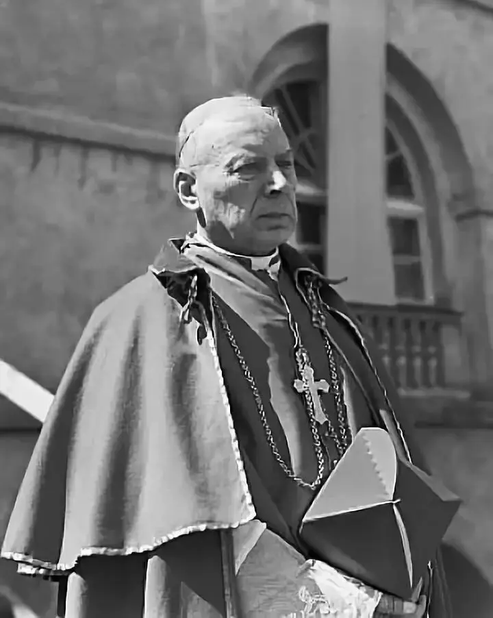
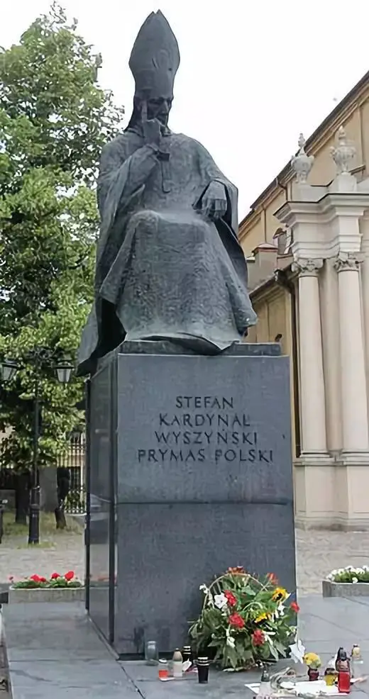
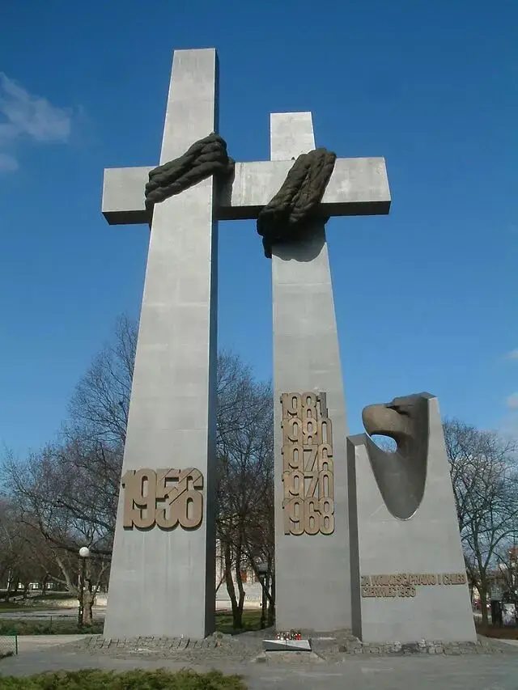
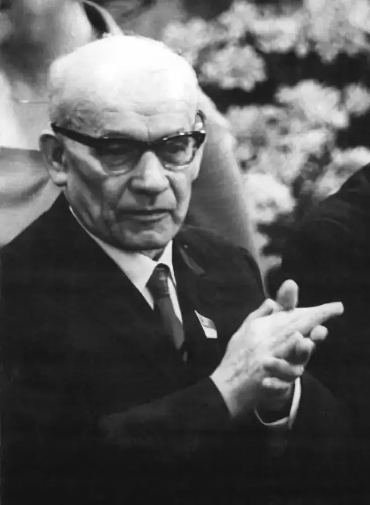
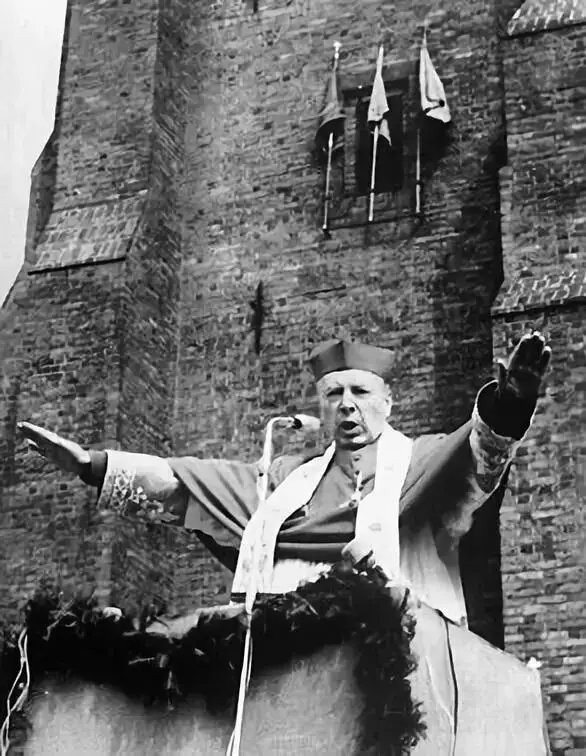
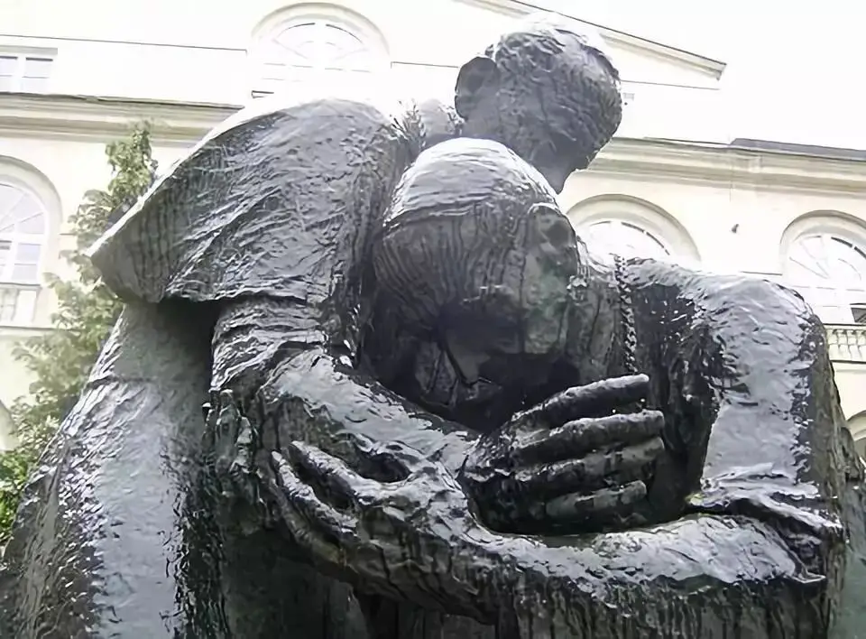
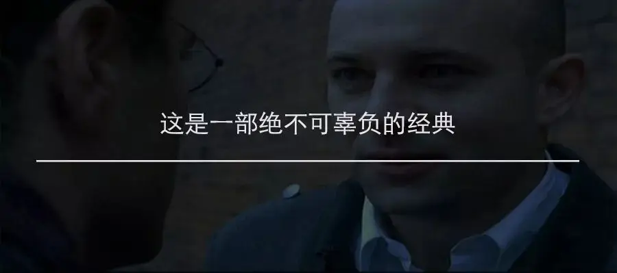

历史总是惊人的相似！
1945年，二战结束时，波兰有600万人遇难，占人口的五分之一。
可是苦难并没有结束，战争后波兰被苏联势力控制，开始推行白色恐怖。
斯大林傀儡政府视天主教为眼中钉，决心要消灭天主教。
学校、医院和报纸等教会机构被关或者被政府没收，神职人员被捕入狱，多人惨遭杀害。
1953年，波兰仿效苏联颁布法令，宣布政府拥有对教会神职人员的任命权，要以世俗权力干涉教会的祭坛。

这遭到维辛斯基枢机主教的拒绝，他亲自写下了由波兰全体主教共同签署的载入史册的致华沙政府信。
信中字字句句落地有声：“如果我们要面临把教会管辖权拱手相让，成为民事政府当局工具的情况，那么我们是不会动摇的（不会接受）”。
“我们不能把上帝的东西送上凯撒的祭台！Non Possumus!（我们不能！）”....
这些铿锵有力的话语激怒了当局。
1953年9月25日，一群秘密警察一大早便敲开了维辛斯基所在教会的大门。
他们兴冲冲地宣布要逮捕维辛斯基。
维辛斯基淡定地说“你们就只剩下暴力了？”
秘密警察“义正言辞”地说：
“在纳粹时期，你虽然拯救了很多人，但是你现在在和人民的权力作斗争，你现在是亲梵蒂冈、亲帝国主义、反波兰分子”
维辛斯基刚正不阿地告诉他们“我一直是我自己，保卫着我们国家的基督灵魂以及他自由、和平和公正的精神”。
气急败坏的秘密警察无言以对，只能恶狠狠地叫维辛斯基整理好自己的东西跟他们走。
维辛斯基随即拿起桌上的《圣经》，告诉他们，可以走了。
这让秘密警察非常惊愕，“难道不准备带什么走么”
维辛斯基告诉他们“我没带什么来，也不带走什么”。
于是，维辛斯基被捕入狱。

△维辛斯基纪念雕像
三年铁窗生涯中，维辛斯基不断遭遇各种司法恐吓、变更秘密关押地点，但维辛斯基没有屈服，他不住地默想和祈祷，甚至为他的狱卒祈祷。
他在监狱中写到：
我在监狱里。
如果他们告诉你维辛斯基主教背叛了上帝，请不要 相信。
如果他们说维辛斯基主教有一双不干净的手 ，请不要相信它。
如果他们说维辛斯基主教变得迟钝，请不要相信它。
当他们说维辛斯基主教反对他自己的国家时，请不要相信它。
我爱自己的家乡比爱自己更甚！
1956年，波兰爆发了轰动世界的波兹南事件，10万波兰工人走上街头要求改善工作条件。
这招致当局武力镇压，一千多人受伤，至少74人死亡，其中包括一名13岁的儿童。

△波兹南事件纪念碑
因为波兹南暴动，哥穆尔卡重新领导国家，他为了获得国民的支持，开始与教会缓和关系。
哥穆尔卡邀请维辛斯基枢机重返总主教公署，维辛斯基表示可以接受，但需要政府遵守一些条件，也就是取消任命主教的法令、保障宗教活动自由、政教独立。

△哥穆尔卡，1945年至1948年任波兰工人党（统一工人党前身）总shuji，后因被指责有反苏倾向而被撤职，1956年波兹南事件后出任波兰统一工人党第一shuji，1970年因经济政策失误而被轰下台。
1956年12月，当局答应了维辛斯基提出的条件，当维辛斯基走出被软禁的修道院时，政府人员开玩笑说“三年的牢狱也没让你虚弱”。
维辛斯基严肃地说“在神学院里我们同班十七个同学，其中十二个死在集中营，你真的觉得我在这么可爱的地方会感觉到束缚么，我可以在这里直到我死去.....我有信仰，一种你全然不知的力量.....我只呆在我的教堂里或者监狱中”

终于，波兰人民再次听到了维辛斯基枢机主教的声音。
这位经历过过二战纳粹和战后白色恐怖的主教发出的言语并没有仇恨和绝望，而是充满了盼望、智慧和爱心。
他告诉人们相互祈祷是一种永不贬低的幸福纽带。
人们说“时间就是金钱”，而维辛斯基则不这么认为，他认为“时间就是爱，因为我们所有人都是上帝之爱的结果。
如果天父不先爱我们每一个人，我们就不会在这个世界！上帝甚至在母亲生育你之前就爱过你.....确认我们是上帝的孩子，并且上帝不会停止爱我们，我们的一生都是值得的，因为有爱。
因此，任何时刻、任何处境，人们都需要彼此相爱。
爱是多么困难 ，但爱又是多么值得。”
面对广泛的无神论教育和宣传，维辛斯基发出警告：
请记住。
没有上帝的新波兰不可能是波兰！
没有上帝的爱，波兰人是不幸的！
面对没有信仰的科学，维辛斯基犀利地指出：
如果你的光、知识、科学、智慧导致善行，那么它来自爱。
如果它被用来繁衍邪恶，它既不是光明，也不是科学，既不是真理也不是爱。

面对社会中的不公不义，维辛斯基指出：
如果最无辜和最脆弱的孩子在社会中感到不安全，那么任何人都不会感到安全！
除了在公共领域的发声，维辛斯基还提醒所有的天主教徒：我们信仰坚强，但......行动薄弱。
就这样，这位上帝衷心的仆人，用他的一生守护和引领着波兰人民，在最黑暗、最恐怖的时期，维辛斯基以一种真信仰的勇敢和无畏带领无数人走过了漫漫黑夜。
他是波兰真正的无冕之王，被称为“千禧年主教”。
1981年5月28日，维辛斯基主教去世，他的挚友、时任罗马教宗的若望保禄二世非常伤心，他写了一封「给波兰人民的信」。
要求大家「纪念这位宝贵的主教，他使人景仰怀念，他的人格、他的教导，他在波兰历史上每一个艰难时期所扮演的角色都值得所有人反复思量」。

△维辛斯基和若望保禄二世纪念像，两人有着深厚的友谊，维辛斯基曾像教宗力荐若望保禄二世为教宗候选人
的确，这个“寒冬”中，维辛斯基也是我们的安慰，波兰的过去是我们的今天，而波兰的今天将会是我们的明天。
在任何时期，那些坚守真理的信仰者都是一个国家的祝福，在如今欧洲被穆斯林不断“绿化”的形势下，波兰是少有的可以保持清醒和警觉的国家。
因为这个苦难的国家曾拥有无数像维辛斯基一样对信仰忠贞的仆人，波兰因此蒙受了上帝的祝福。
今天，这个祝福将要临到我们，寒冬过后将是最美的春天。
△波兰议员霸气回应伊斯兰难民问题
除了上面的视频
还有一个非常好的视频推荐给大家
这个视频记录了2015年波兰抗议伊斯兰难民的游行
神父、年轻人纷纷走向大街高举信仰发表着演讲
但此视频审核无法通过
大家可在后台回复“波兰”获取视频
滑动下方可查看视频内容
前面的数字是对应的时间
此翻译来自知乎
欢迎懂英语的朋友在留言区提供更好的翻译
《波兰 永不为奴》
▼
0:16 一群捍卫基督教的波兰爱国者们
0:23 对正在欧洲苏醒的伊斯兰入侵进行了独立游行
0:35 这是波兰历史上最大的游行
0:53 没有一个人被主流媒体报道
1:03 颂赞永远地归与我们的主耶稣基督
1:07 阿门
1:09 亲爱的人们，今天当我们教会与祖国的敌人看到这片爱国大军定会发疯不已
1:23 这些爱国者们的心中存在着上帝、荣光与祖国，视死如归
1:29 很明显左派的宣传尽了其所能毁灭我们，毁灭教会，毁灭波兰人
1:41 我们绝不会让此发生！
1:44 我们是为波兰而战的基督徒战士！
1:50 他们不会明白，他们越是攻击我们，我们国家的精神越是高涨
1:58 精神，精神，国家之灵魂！
2:13 我们心明于我们的根，心明于基督教传统
2:28 上帝啊！荣光啊！祖国啊！
2:42 我们必须听从使徒保罗的话语
2:47 走向尚未听说基督的人们是我的殊荣
2:53 我们必须走出礼拜堂、教堂和教派
3:00 我们必须诉说基督的真理！我们必须这样做！
3:05 做好被人吐唾沫的准备
3:08 做好受迫害的准备
3:13 但是我们唯一的主救世主耶稣基督给予了我们力量与勇气
3:22 我们是！我们是！波兰人！
3:37 我亲爱的人们，我们是基督徒战士，波兰伟大的军队
3:44 我们不能忘记历史终会重演
3:48 1944年有人劝说我们加入苏联，2015年有人劝说我们接受伊斯兰原教旨主义
4:05 我们永不接受！
4:16 我们不担心温柔的穆斯林，我们担心那些原教旨主义者
4:23 我们不需要波兰出现任何暴力事件
4:26 我们不需要安拉的侵略
4:31 抵制强奸！抵制私刑！抵制恐怖袭击！
4:35 我们必须站起来面对！
4:37 我们不需要古兰经上的仇恨
4:40 我们需要的是福音的爱与真理！
4:46 福音永传！拒绝古兰！
5:00 我亲爱的人们，左翼与伊斯兰教对基督教与我们国家的入侵是一个严肃的问题
5:09 任何人休想夺去我们的基督传统！
5:13 穆斯林休想！左派休想！奥巴马休想！
6:42 对所有美国的穆斯林说：请你们不要搞错，美国现在比以往更加是一个基督教国家
6:50 在美国，耶稣基督是王中之王，主中之主
6:56 如果你不尊重这个事实，你不配待在美国
7:03 对全球主义的，包含左翼与冒充保守党的共和党的政治团体说：
7:12 你们已经不再对美国有控制权
7:20 你们欺骗与操纵控制的手段，包括主流媒体、好莱坞、联合国、NASA以及计划生育联合会已经遭到曝光
7:33 你们的恶魔政权已经结束
推荐阅读
▼
（点击图片即可获取全文）


这里没有挑逗你眼目情欲的小鲜肉
也没有挑动你肉体情欲的段子
更没有膨胀你今生骄傲的鸡血
我们只在乎那些最质朴真诚的作品
在那里我们才能恢复真正的想象力
我们也坚信这才是我们真正需要的

ID:Six_hundred_hits
长按二维码，一键关注
【六百击】
-END-
电影评论
尽情分享朋友圈
苹果打赏通道
小提示：文末广告是腾讯配送广告，内容与本号无关，但您的每次点击（无需反复点）都会给平台带来几毛收益，欢迎您点击支持六百击。